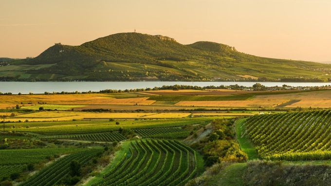
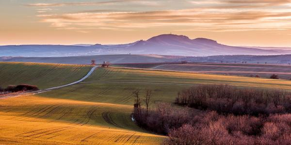
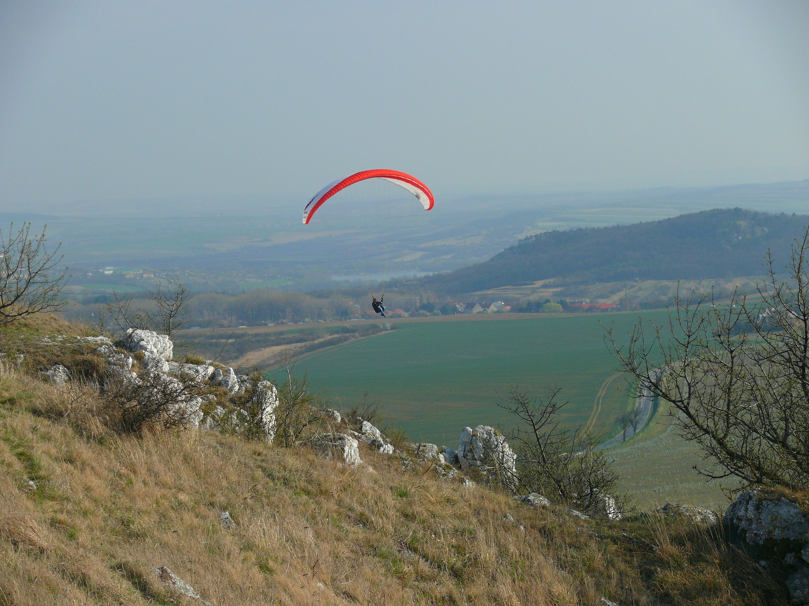
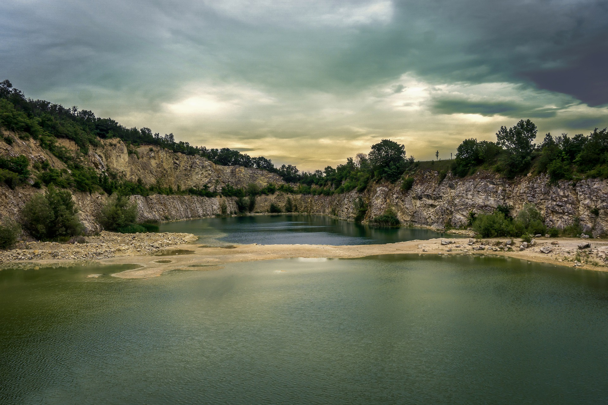
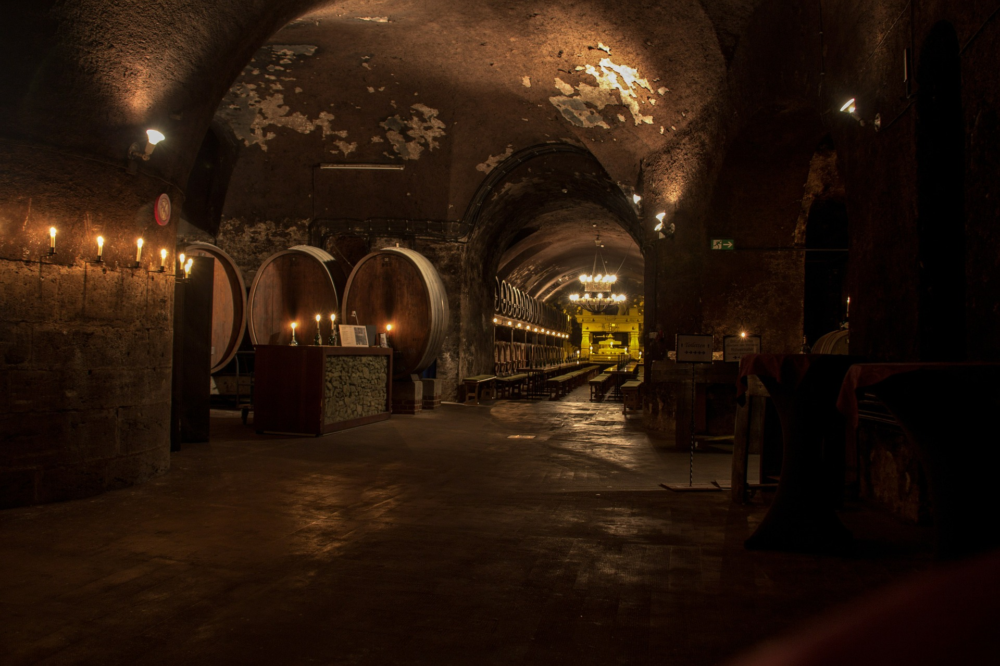
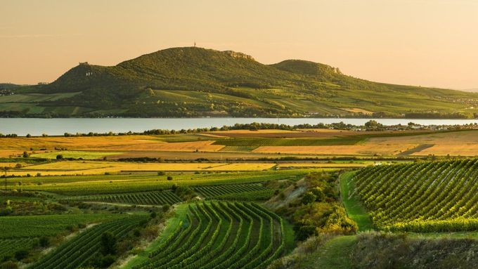
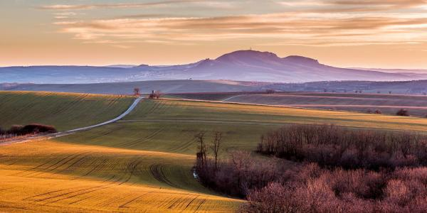
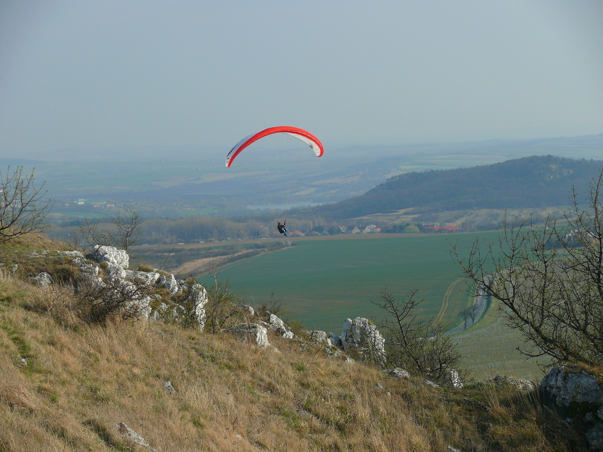
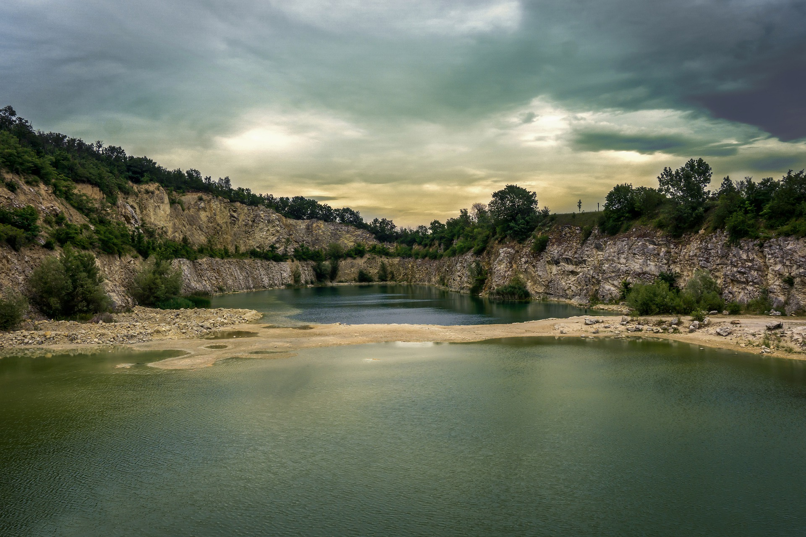
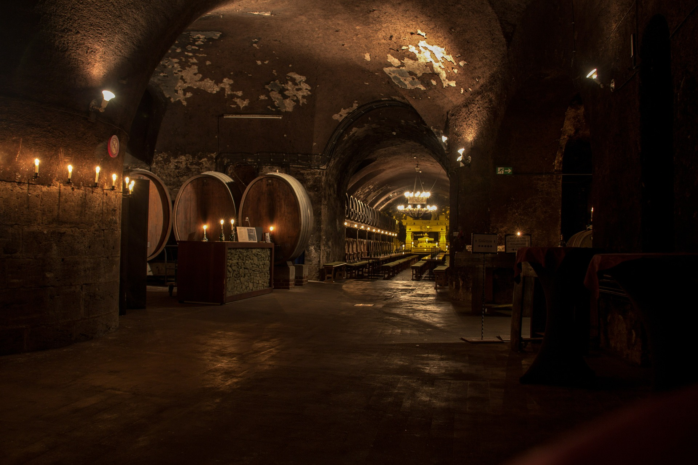

V severozápadním výběžku Panonské nížiny, v jedné z nejteplejších oblastí České republiky, se nachází Pavlovské vrchy. Zdejší zem dodnes střeží dávná tajemství lovců mamutu, Keltů i zapomenuté osudy vojáků X. římské legie, kteří tu podle legendy začali s pěstováním vinné révy.
Pálava byla v roce 1976 vyhlášena chráněnou krajinnou oblastí a o deset let později biosférickourezervací UNESCO. Nejvýznamnějšími výchozími body pro turistiku je Mikulov a Pavlov. Oblast s mnoha jedinečnými druhy rostlin má také vynikající polohu pro pěstování vinné révy. Úrodný kraj kolem Pálavských vrchu však skrývá mnohem víc, než uvidíte ze sedla kola při cestách rozlehlými vinohrady.
O tom, že zdejší "zemi spálenou sluncem" milovali už pralidi, svědčí pozůstatky ohnišť, skladiště mamutích kostí a především světoznámá Věstonická Venuše. Turisti na Pálavě obdivují také pestré květiny, jako třeba kosatce na Děvíně či Kočičí skále, písečnice velkokvěté, které u nás jinde než tady nenajdete, a dále pak šalvěj etiopská či ovsíř stepní, který roste nedaleko Mikulova od konce poslední doby ledové.
Navštívit můžete tak zříceniny Sirotčí hrádek a Dívčí hrady. Různé druhy skalních suchých trávníků, lemových společenstev, suchomilných křovin a teplomilných doubrav na svazích Děvína se označuje jako krasová lesostep. Na západním břehu rybníka Nesytu u Sedlece dosud přežívají zbytky slanomilné vegetace, která byla v minulosti na zasolených pastvinách jižní Moravy téměř běžná. V oblasti bývají navštěvovány zříceniny tří středověkých hradů a naučná stezka.
Do roku 2003 existovala biosférická rezervace Pálava, která byla územně totožná s CHKO Pálava. Od roku 2003 se Pálava stala významnou součástí nově vzniklé biosférické rezervace Dolní Morava. Část území CHKO Pálava je také součástí Mokřadů Dolního Podyjí, vyhlášených v roce 1993 a chráněných Ramsarskou konvencí.
 








